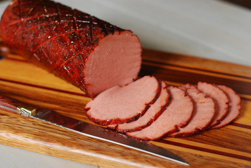

Smoked Bologna

Smoked bologna is another one of those quick and easy entrees every smoker can churn out for events. The simplicity is king here. This recipe will cover the most basic method I've encountered, along with being my favorite
Three simple ingredients combine to make a base you can do a lot with. You can turn this into sandwiches, poor man's burnt ends, or simply slice it into crackers.
Ingredients
- 5 lbs Bologna chub
- Dry rub of your choice
- Yellow mustard
Directions
- Score the bologna in whatever way is aesthetically pleasing for you. Google examples.
- Rub a thin layer of mustard onto the meat. This is your binder to help the rub stick
- Sprinkle a heavy coating of bbq rub onto meat
- Preheat smoker to 225-325*. It's bologna, not brisket. Don't overcomplicate this.
- Smoke for 1 to 2 hours. Don't burn it. There's no magic time for this. Pull when ready to eat.